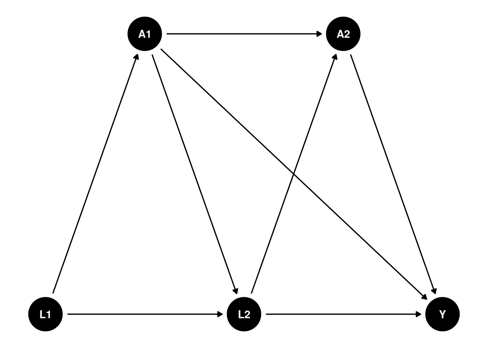

I read a few papers with longitudinal modified treatment policy (LMTP), and found it interesting. It has been used in epidemiology and biostatistics, but I have not seen it in applied econometrics yet.
Here I am mostly following Nicholas Williams: https://beyondtheate.com/
We are usually interested in ATE, the average treatment effect. However, there could be more complicated situations that the treatment is continuous, or the treatment is multivalued, or the treatment is time-varying. The static interventions have problems. For example, the hyphothetical interventions that treatment applies to everyone might be inconceivable. Or such intervention could make positivity assumption fail.
Suppose we have such a DAG:
library(ggplot2)library(ggdag)g <-dagify( A1 ~ L1, L2 ~ L1, L2 ~ A1, A2 ~ A1, A2 ~ L2, Y ~ A2, Y ~ L2, Y ~ A1,exposure ="A2",outcome ="Y",coords =list(x =c(L1 =1, L2 =2, Y =3, A1 =1.5, A2 =2.5),y =c(L1 =1, L2 =1, Y =1, A1 =1.5, A2 =1.5)))ggdag(g) +theme_dag()

We have multiple time points, and the treatment \(A\) is time-varying. We are interested in not only the ATE of \(A_2\) on \(Y\), but also some other hypothetical interventions.
Definitions and assumptions
Assumptions
Positivity. Basically if there is a unit with \(a_t\) and \(h_t\), then there is a unit with \(d(a_t, h_t)\) and \(h_t\).
Sequential unconfoundedness. There is no unmeasured confounders.
dynamic treatment regime
Some notations commonly used in this literature: We observe \(Z = (L_0, A_0, L_1, A_1, Y)\), where \(L\) is the observed confounder, \(A\) is the treatment, and \(Y\) is the outcome. The treatment \(A\) can be time-varying. We can also have multiple treatments at different time points. For example, we can have \(A_2\), \(A_3\), etc. In this graph, baseline \(L_0\) affects \(A_0\), which in turn affects \(L_1\), which then affects \(A_1\), and finally \(A_1\) affects the outcome \(Y\).
History \(H_t\) is the history of data up to time \(t\), right before \(A_t\). for example, \(H_1 = (L_0, A_0, L_1)\), and \(H_2 = (L_0, A_0, L_1, A_1)\). \(d\) is the hypothetical intervention function, or shift function, which is a function of the history \(H_t\) and the treatment \(A_t\). For example, \(d_0(a_0,h_0,\epsilon_0)\) is a user-given function to map \(a_0\), \(h_0\), and \(\epsilon_0\) to a potential treatment value. The function \(d\) can be deterministic, or it can be stochastic. Then we can replace \(A_0\) with \(A_0^d = d_0(A_0, H_0, \epsilon_0)\). Then after that \(A_1(A_0^d)\) is called the natural value of treatment.
This is very general, comparing to the static treatment regime.
Suppose treatment \(A\) is a function of the history of treatment and confounders, for example, \(A = d(A_1, L_1, A_2, L_2)\). \(A\) can be set to a fixed value, say 1 or 0, or some value \(A^d\). This function \(d\) can be anything, it can be taking a deterministic value, or it can be a function that takes the natural treatment value \(A\) as input. In the package “lmtp”, this is called a shift function, or hypothetical intervention. For example, \(d\) can be set to 1 if \(age < 30\), or \(d\) can be set to double the natural value of \(A\). Many possibilities.
In comparison, for ATE, we only need to set \(A\) to 0 or 1.
Under this LMTP, the causal parameter is
\[ \theta = E[Y^{\bar A^d}] \]
\(Y^{\bar A^d}\) is the potential outcome under the hypothetical intervention \(\bar A^d\). At time 1, \(A^d_1 = d(A_1,H_1)\).
modified treatment policy
Let’s look at a simulated data set to see how exactly we can estimate it.
This simulation is from Susmann et al. (2024) “Longitudinal Generalizations of the Average Treatment Effect on the Treated for Multi-valued and Continuous Treatments”. I modified slightly to fit the DAG above.
library(tidyverse)library(tidyr)mtp <-function(data, trt) { a <- data[[trt]] a *0+1}simulate_data <-function(seed, N, tau, sigma =0.5) {set.seed(seed) data <-tibble(id =1:N)for(t in1:tau) { Lt <-paste0("L_", t) Ltd <-paste0("L_", t, "d") At <-paste0("A_", t) Atd <-paste0("A_", t, "d") Lt1 <-paste0("L_", t -1) Lt1d <-paste0("L_", t -1, "d") At1 <-paste0("A_", t -1) At1d <-paste0("A_", t -1, "d")if(t ==1) { data[[Lt]] <-runif(N, 0, 1) data[[Ltd]] <- data[[Lt]] data[[At]] <-rbinom(N, size =1, prob =0.5) } else { data[[Lt]] <-rnorm(N, mean =0.25* data[[Lt1]], 0.5) data[[Ltd]] <-rnorm(N, mean =0.25* data[[Lt1d]], 0.5) data[[At]] <-rbinom(N, size =1, prob =plogis(0.5-0.2* data[[At1]] +0.1* data[[Lt1]])) } data[[Atd]] <-mtp(data, At) } data$Y <-rnorm(N, data[[At]] + data[[Lt]], sigma) data$Yd <-rnorm(N, data[[Atd]] + data[[Ltd]], sigma) data}simulated_data1 <-simulate_data(seed =123, N =10000, tau =2)mean(simulated_data1$Yd)
[1] 1.128593
mtp <-function(data, trt) { a <- data[[trt]] a *0+0}simulated_data2 <-simulate_data(seed =123, N =1000, tau =2)mean(simulated_data2$Yd)
Note in this simulation the variables ending with “d” are the variables under hypothetical intervention, or modified treatment policy. \(L_1\) is from \(uniform(0,1)\), and \(L_2\) is from \(N(0.25 * L_1, 0.5)\). The treatment \(A_1\) is from a Bernoulli distribution with probability 0.5, and the treatment \(A_2\) is from a Bernoulli distribution with probability \(plogis(0.5 - 0.2 * A_1 + 0.1 * L_2)\). The outcome \(Y\) is from a normal distribution with mean \(A2 + L2\). In the simulated data, the modified treatment policy is to set the treatment to 0, then 1. The difference would be SATE.
In this case, we can just do a linear regression to get the effect of A2 on Y, knowing the exact DAG.
Call:
glm(formula = Y ~ L_2 + A_1 + A_2, data = simulated_data1)
Coefficients:
Estimate Std. Error t value Pr(>|t|)
(Intercept) -3.453e-05 9.615e-03 -0.004 0.997
L_2 9.998e-01 9.889e-03 101.103 <2e-16 ***
A_1 -6.042e-03 1.001e-02 -0.604 0.546
A_2 1.000e+00 1.027e-02 97.380 <2e-16 ***
---
Signif. codes: 0 '***' 0.001 '**' 0.01 '*' 0.05 '.' 0.1 ' ' 1
(Dispersion parameter for gaussian family taken to be 0.2500364)
Null deviance: 7400.0 on 9999 degrees of freedom
Residual deviance: 2499.4 on 9996 degrees of freedom
AIC: 14523
Number of Fisher Scoring iterations: 2
Let’s try a different MTP: set half of the time to 0, the other half remain unchanged. \[
d(a_t, \epsilon_t) = \begin{cases}
0, & \text{if } \epsilon_t < .5 \ and \ a_t =1 \\
a_t, & \text{otherwise}
\end{cases}
\]
This is, say, to set half of smokers to non-smokers, and the other half remain smokers.
Note this recursive process is based on Diaz, et al. (2023) “Nonparametric Causal Effects Based on Longitudinal Modified Treatment Policies”.
Here is how exactly we estimate it: we start with the last time point. Regress it on previous treatment and confounders, and then get the predicted value with \(A\) changed based on the MTP. Regress that predicted value on the previous treatment and confounders, get predicted values with \(A\) changed based on MTP. Repeat until the first time point. The average of the predicted value at time 1 is the expected value under this MTP.
This is basically g-formula extended to longitudinal data.
In a general case, this is the generalized g-formula to estimate \(\theta\):
Set \(m_{\tau + 1} = Y\), let \(A_t^d = d(A_t, H_t)\). For \(t = \tau, \ldots, 1\), recursively define:
We start from the last period. Regress \(m_{\tau + 1}\), which is \(Y\) on \(A_{\tau}\) and \(H_{\tau}\). Then get the predicted value with \(A_{\tau}\) changed based on the MTP. Then regress that predicted value on \(A_{\tau - 1}\) and \(H_{\tau - 1}\). Repeat until the first time point. The average of the predicted value at time 1 is the expected value under this MTP.
Estimators
The authors advocate two estimators, TMLE and SDR (sequentially doubly robust estimatro). The procedures are the same, starting from the last time point, then apply TMLE or SDR, iterate to the first time point.
The data set bmi, from the DynTxRegime package, are simulated to reflect a two-stage RCT {A1, A2} that studied the effect of meal replacement (MR) shakes versus a calorie deficit (CD) diet on adolescent
shift function 1
Consider a shift function that assigns meal replacement to all observations at time 1, but only meal replacement at time 2 to those observations whose 4-month BMI is greater than 30.
Suppose we are interested in comparing the dynamic treatment regime to a static treatment regime where all patients receive meal replacement at both time points. Using the SDR estimator, estimate the effect of this static intervention.